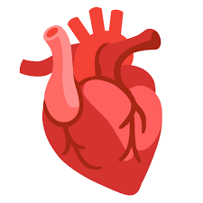

|  |
El corazón bombea sangre a todas las partes del cuerpo. La sangre suministra oxígeno y nutrientes a todo el cuerpo y elimina el dióxido de carbono y los elementos residuales. A medida que la sangre viaja por el cuerpo, el oxígeno se consume y la sangre se convierte en desoxigenada.
La sangre desoxigenada regresa del resto del cuerpo al corazón a través de la vena cava superior (VCS) y la vena cava inferior (VCI), las dos venas principales que llevan la sangre de vuelta al corazón.
La sangre desoxigenada entra a la aurícula derecha (AD), o cavidad superior derecha del corazón.
Desde allí, la sangre fluye a través de la válvula tricúspide (VT) hacia adentro del ventrículo derecho (VD), o cavidad inferior derecha del corazón.
El ventrículo derecho (VD) bombea sangre desoxigenada a través de la válvula pulmonar (VP) hacia la arteria pulmonar principal (APP).
Desde allí, la sangre fluye a través de las arterias pulmonares derecha e izquierda hacia adentro de los pulmones.
En los pulmones, se le incorpora oxígeno y se le retira dióxido de carbono a la sangre durante el proceso de respiración. Después de que la sangre recibe oxígeno en los pulmones, se llama sangre oxigenada.
|